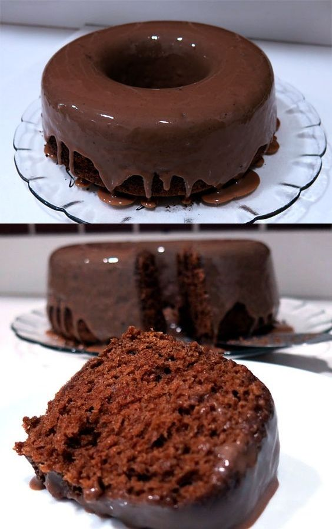

Bolo de Chocolate Simples

Para fazer a Massa
- 3 Ovos
- 2 Xícaras (chá) de farinha de trigo
- 1/2 Xícara (chá) de óleo
- 1 Pitada de sal
- 1 Xícara e meia (chá) de açucar
- 1 Xícara (chá) de chocolate em pó ou achocolatado
- 1 Colher (sopa) de fermento em pó
- 1 Xícara (chá) de água quente
Para fazer a Cobertura
- 4 Colheres (sopa) de leite
- 1 Colher (sopa) de manteiga
- Meia xícara (chá) de chocolate em pó
- 1 Xícara (chá) de açúcar
Modo de Preparo
Para Massa
- Em um liquidificador, bata os ovos, o açúcar, o óleo, o achocolatado e a farinha de trigo.
- Despeje a massa em uma tigela e adicione a água quente e o fermento, misturando bem.
- Despeje a massa em uma forma untada e asse em forno médio-alto (200° C), preaquecido, por 40 minutos.
- Desenforme ainda quente.
Para Cobertura
- Em uma panela, leve todos os ingredientes ao fogo até levantar fervura.
- Despeje ainda quente em cima do bolo.